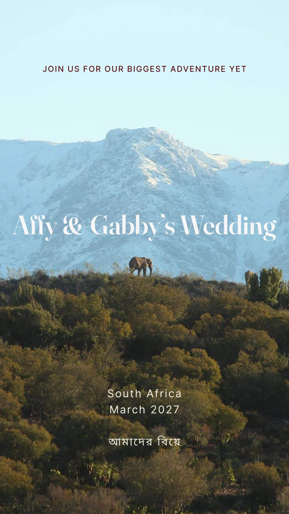

01
The hero
Live HTML type over the photograph.
Join us for our biggest adventure yet
Affy & Gabby’s
Wedding


In the build now
The same photograph, with the eyebrow, the names and the meta row as real text over it.
- One image serves every screen; the type reflows to fit
- Reads at any size, and to a screen reader
- Changing a word is a one-line edit
- The names needed a scrim to stay legible over snow
233 KB
Gabby’s
A finished composition. Typography exactly as drawn, including the wide letter-spaced setting that CSS would have to approximate.
- Needs two files — a separate mobile crop, which she has supplied
- Type is pixels: it can’t be selected, searched or read aloud
- Fixed 2000×1422, so very wide or very tall screens crop or letterbox
- Any wording change means a re-export from her, not an edit here
233 KB desktop + 162 KB mobile